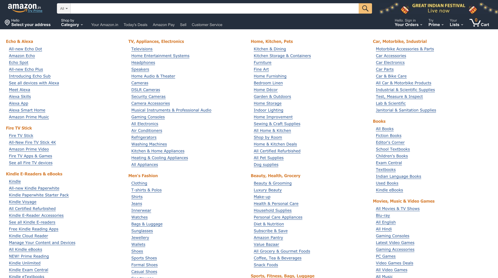

Hick's law, or the Hick–Hyman law, named after British and American psychologists William Edmund Hick and Ray Hyman, describes the time it takes for a person to make a decision as a result of the possible choices he or she has: increasing the number of choices will increase the decision time logarithmically.
Given n equally probable choices, the average reaction time T required to choose among the choices is approximately:
\(T = a + b*log_2(n+1)\)
where coefficients \(a\) and \(b\) depend on context conditions, including the way the choices are presented and the user’s degree of familiarity with the subject.
Wait, how does this apply to UX?
Hick's law is sometimes cited to justify menu design decisions. For example, to find a given word (e.g. the name of a command) in a randomly ordered word list (e.g. a menu), scanning of each word in the list is required, consuming linear time, so Hick's law does not apply. However, if the list is alphabetical and the user knows the name of the command, he or she may be able to use a subdividing strategy that works in logarithmic time.
In the examples given below, the first example shows an Amazon menu with options divided into categories while the second option shows a menu without deep categorization. The time taken to find the same item would be lesser in first menu given the user is not familiar with menus, as it is organized in a hierarchy with better information scent.
The menu is divided into categories so that people can find what they are looking for quick!

The same menu when expanded is harder to browse and less user friendly
Linear vs Sublinear time patterns
Expanding on the idea of organizing data in useful categories, let's go through two activities, one in which the data is presented without any clear hierarchy and the second activity in which data is presented in some hierarchy.
Activity 1
For the first activity, let's assume you are desiging a system and you need to pick a primary color for the design system. In the following activity, you will select your favorite color from the given set of colors.
Step-by-Step Instruction:
Select number of colors to choose from (From the dropdown)
All the colors would be black right now, click on start for the colors to show up
Click on the shade of color you like the most
Your time will be saved for this trial, you can proceed to do the trial more number of times by hitting start again.
Or, you can proceed by selecting a higher number of choices from the dropdown
Complete the activity for varying number of color choices to see how your decision time changed
Time taken:
Current average time for these number of choices is: